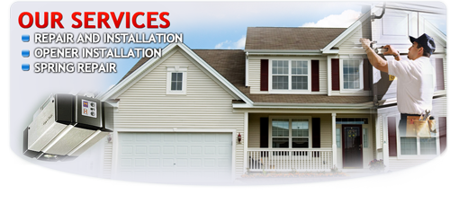

- GARAGE DOOR SERVICES


Open 24 Hours a day, 7 days a Week!
610-589-0067


Garage Door King Of Prussia
We offer Fast Reliable
- 24 hour garage door repair.
- Garage door opener and gates
- Repair Springs, cable and rails
- Residential & Commercial Garage door
Call today for a free estimate
610-589-0067
OUR SERVICES
- Garage Door Repair
- Commercial Garage Door
- Residential Garage Door
- Garage Door Spring Repair
- Garage Door Installation


Garage Door Services King Of Prussia
Garage Door King Of Prussia Service, your all in one solution place for your garage doors services in King Of Prussia ,PA. We do repairs, installations, openers, and service all of your needs in the King Of Prussia ,PA area. Garage Doors King Of Prussia ,PA, is proud of being your one-stop garage doors service solution for all residential and commercial garage door needs.
King Of Prussia Garage Door is what you are looking for. We are a fast rising garage door servicing company here in Maryland. Our name is reputable in this side of the United States because of our guaranteed garage door services which are
trusted by our loyal customers. We provide you residential and commercial garage doors that are made of the finest materials and you can select their designs and colors that are created by our highly skilled garage door technicians and artisans.
Garage Doors King Of Prussia When you are troubled, your broken or rusted garage door our technicians are ready to lend their time to give you peace of mind. They are on call during emergencies and in minutes they can
finish their work. We offer special package for new doors and replacements, customized doors, electronic garage doors, garage door automatic control systems, garage door section replacements, garage door electric opening devices and all
kinds of garage door parts. Included in our special package is installation of insulation kits.

We have a remarkable history of garage door services that is definitely talked about and we believe our five star rating comes from our efficient and world class
commercial and residential garage doors as well as services such as repair, replacement and installation of various garage doors parts from door openers, cables, torsions, and springs. King Of Prussia Garage Door houses different models
and styles of garage doors that you really would love to have. When you see our display, you will be mesmerized at the exquisite designs that separate us from other garage door companies here in King Of Prussia r />
Get Free Estimate
SERVICE-REQUIRED
- Repair
- Openers
- Spring Openers
- Roll-up Gates
- Residential
- Commercial